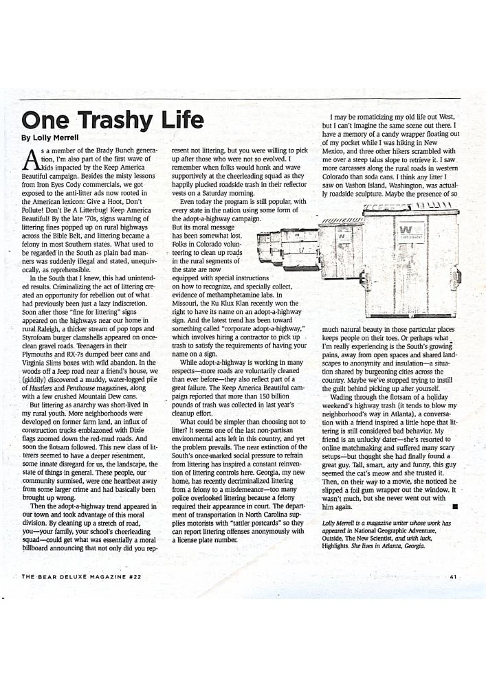

One Trashy Life

A personal essay on litter, roadside landscapes, and the contradictions of America’s efforts to keep itself beautiful.
View PDF here »PDF · 1.4 MB← Back to Science, Environment and Culture
A personal essay on litter, roadside landscapes, and the contradictions of America’s efforts to keep itself beautiful.
View PDF here »PDF · 1.4 MB← Back to Science, Environment and Culture